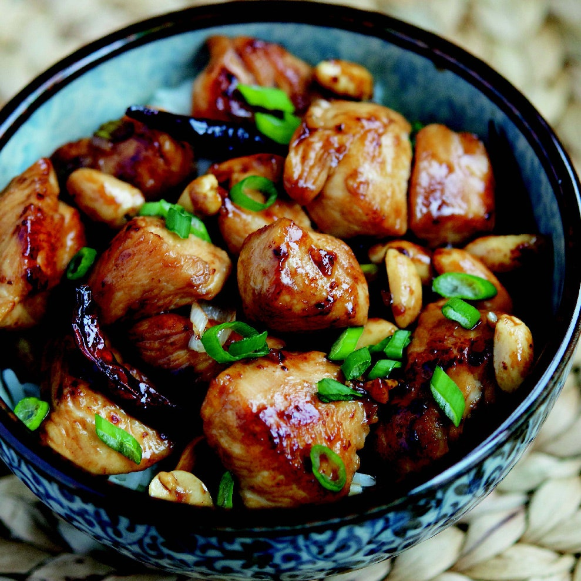

Kung Pao Chicken

A Bowl of Kung Pao Chicken, Sprinkled in Green Scallions.
This highly addictive stir-fried chicken continues to be one of the most popular Chinese dishes in America as the succulent, complex sauce of salty, sweet, sour, and spicy flavors is hard to pass up. For years Americanized versions often left out the Sichuan peppercorns because of an import ban, but now Sichuan peppercorns are once again easily found in Chinatown shops and even gourmet chains such as Whole Foods.
Ingredients
Marinade
- 1 tablespoon soy sauce
- 2 teaspoons Chinese rice wine or dry sherry
- 1 1/2 teaspoons cornstarch
- 1 pound boneless, skinless, chicken breasts or thighs, cut into 1-inch cubes
Sauce
- 1 tablespoon Chinese black vinegar, or substitute good-quality balsamic vinegar
- 1 teaspoon soy sauce
- 1 teaspoon hoisin sauce
- 1 teaspoon sesame oil
- 2 teaspoons sugar
- 1 teaspoon cornstarch
- 1/2 teaspoon ground Sichuan pepper
- 2 tablespoons peanut or vegetable oil
- 8 to 10 dried red chilies
- 3 scallions, white and green parts separated, thinly sliced
- 2 garlic cloves, minced
- 1 teaspoon minced or grated fresh ginger
- 1/4 cup unsalted dry-roasted peanuts
Directions
- Marinate the chicken: In a medium bowl, stir together the soy sauce, rice wine, and cornstarch until the cornstarch is dissolved. Add the chicken and stir gently to coat. Let stand at room temperature for 10 minutes.
- Prepare the sauce: In another bowl, combine the black vinegar, soy sauce, hoisin sauce, sesame oil, sugar, cornstarch, and Sichuan pepper. Stir until the sugar and cornstarch are dissolved and set aside.
- You may need to turn on your stove's exhaust fan, because stir-frying dried chilies on high heat can get a little smoky. Heat a wok or large skillet over high heat until a bead of water sizzles and evaporates on contact. Add the peanut oil and swirl to coat the base. Add the chilies and stir-fry for about 30 seconds, or until the chilies have just begun to blacken and the oil is slightly fragrant. Add the chicken and stir-fry until no longer pink, 2 to 3 minutes.
- Add the scallion whites, garlic, and ginger and stir-fry for about 30 seconds. Pour in the sauce and mix to coat the other ingredients. Stir in the peanuts and cook for another 1 to 2 minutes. Transfer to a serving plate, sprinkle the scallion greens on top, and serve.